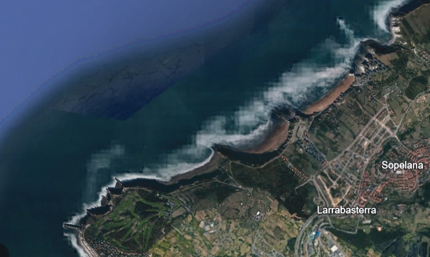
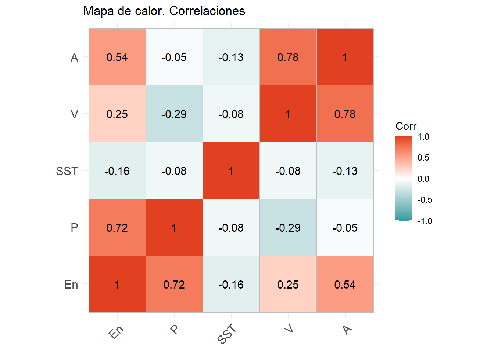
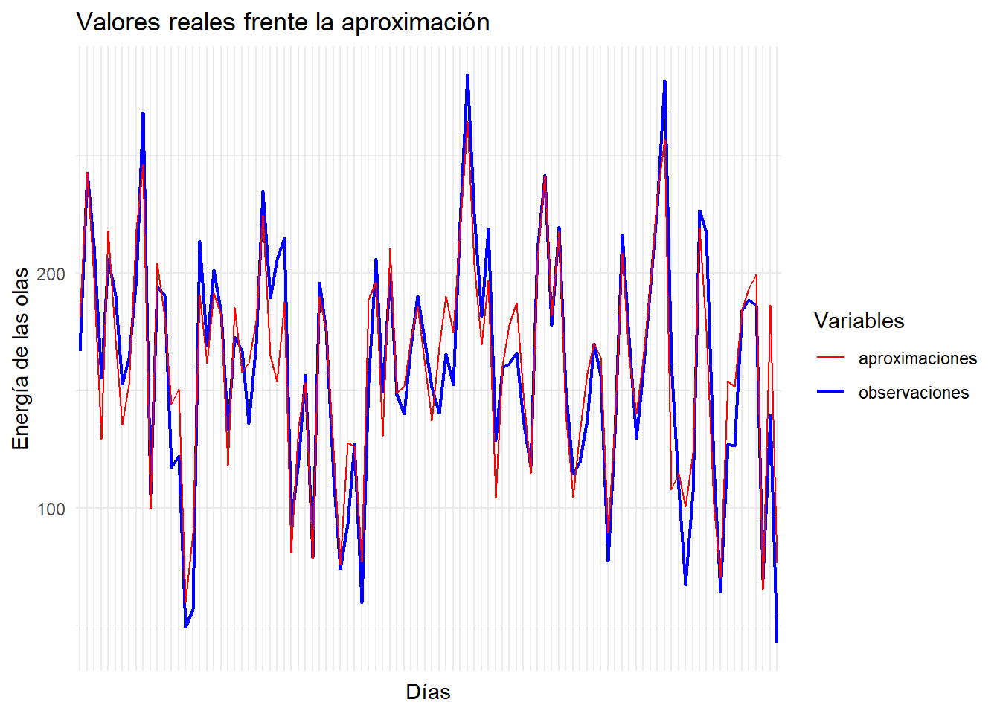
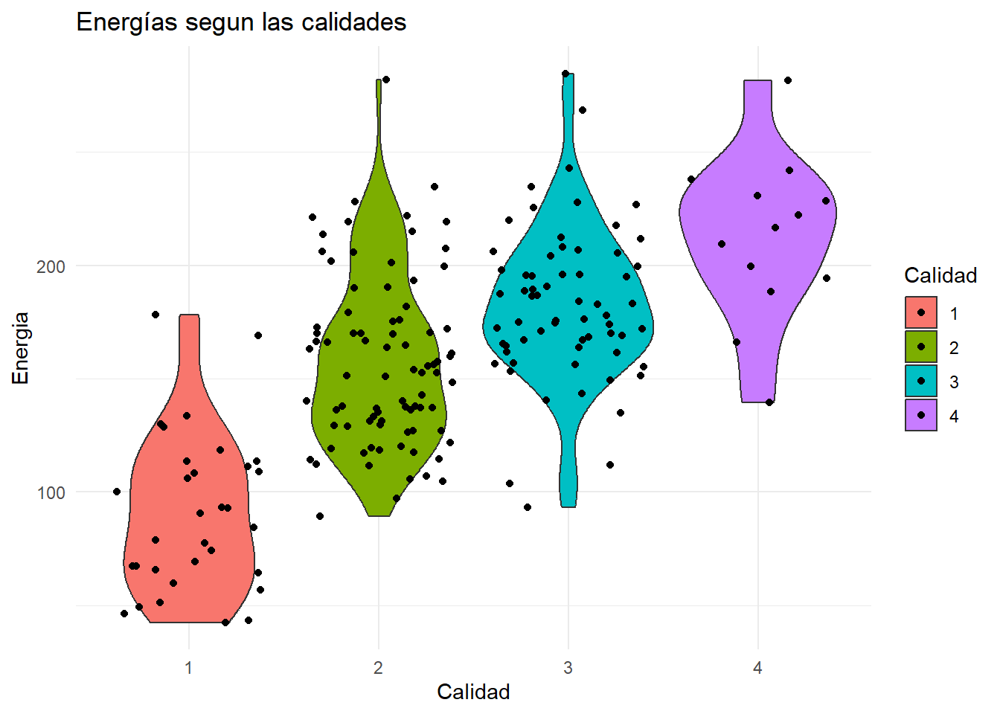
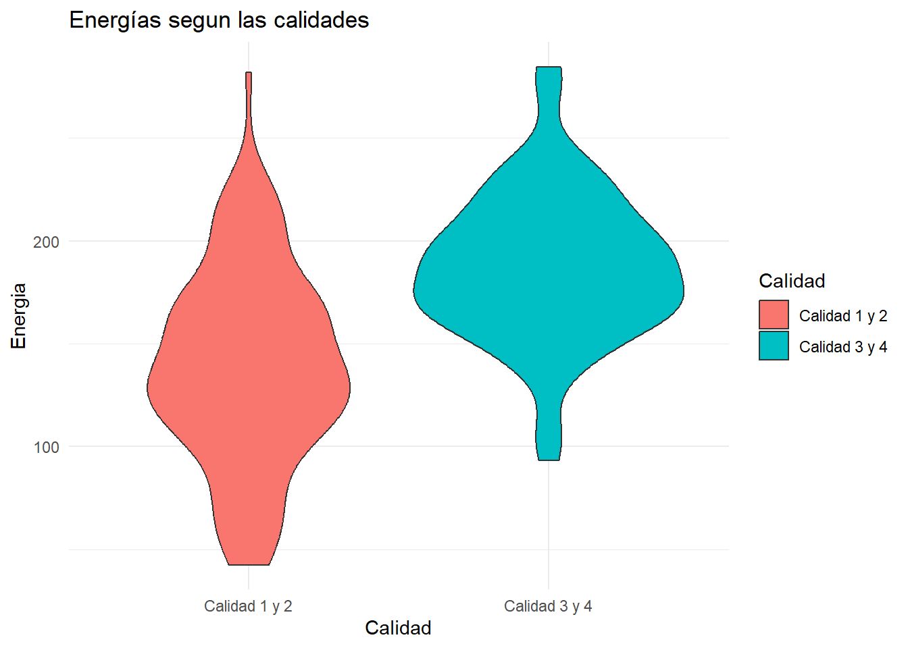

Rows: 200
Columns: 8
$ V <dbl> 8.467888, 8.877916, 5.281422, 7.123419, 13.959334, 10.373866, 4.20…
$ En <dbl> 227.41502, 180.63169, 122.75817, 124.56852, 208.10093, 268.27876, …
$ P <dbl> 13.334642, 10.936226, 8.276019, 8.376262, 10.926849, 11.991172, 5.…
$ A <dbl> 1.4497113, 1.2515921, 1.1708505, 1.1651771, 1.4419729, 1.6898622, …
$ DV <chr> "S", "E", "W", "E", "SW", "W", "NE", "NW", "SW", "SW", "E", "E", "…
$ M <chr> "BAJA", "ALTA", "BAJA", "ALTA", "BAJA", "ALTA", "BAJA", "ALTA", "B…
$ DAT <chr> "2017-03-26 tarde", "2017-03-27 mañana", "2017-03-27 tarde", "2017…
$ SST <dbl> -99.90, -99.90, -99.90, -99.90, -99.90, -99.90, -99.90, -99.90, 24…Predicción oleaje
20582- Análisis de Datos para el GMAT
Podemos encontrar todo el código en el repositorio de GitHub
Introducción
La predicción de la situación costera es muy importante para logística portuaria, para la pesca, para la seguridad de zonas costeras y para cualquier aficionado al deporte. El ayuntamiento de Bilbao dispone de una boya para medir la altura de una ola y su periodo en la playa de Arrietaram, una playa muy concurrida por los surfistas. Además disponen de un anómetro costero para medir también el viento. En este proyecto queremos proporcionar una predicción del oleaje y la calidad de la ola para hacer surf, asi ayudamos a los y las surfistas que frecuentan estas playas.
Un factor importante de la ola para el surfista es la energía ya que és una medida de con cuanta fuerza empujará la ola. Sin embargo no puedemos medir la energía de las olas con la boya que disponemos. Entonces han alquilado una boya a la empresa datawell para que tambien les mida la energía de las olas durante 100 días, una vez por la mañana con marea alta y otra por la tarde con marea baja.

Para proporcionar una web de predicción del oleaje modelizaremos la energía de las ola con los datos que puede proporcionar su boya. Además definiremos una variable que nos diga la calidad de la ola y miraremos si podemos relacionarla también con los datos que tenemos.
Las muestras de datos són aleatorias generadas a partir de funciones de R. Para aportar realismo hemos hecho una interpretación de datos que hemos obtenido de aplicaciones como WindGuru, Windy o TodoSurf (que solo son semanales). Además para la generación de datos definimos una dependencia temporal, ya que no seria lógico que hoy hubiese olas de dos metros y a las 12 horas el mar este en calma.
Planteamos la hipotesis de que un viento de tierra viene relacionado con una disminución de la energía y la altura, pero un aumento del periodo. Y que para un viento de mar provoca el efecto contrario. Para hacer este contraste realizaremos un contraste de medias restringiendo nuestros datos a los dos tipos de viento. Además veremos que definiendo una calidad de la ola, esta relacionado con una media de la energía más alta.
Añadiremos la variable SST que indica la temperatura de la superficie del agua de la base de datos de (Akdag, 2023). Hemos utilizado durante el proyecto resultadis teóricos de los apuntes de (García, 2024)
Analisis exploratorio:
Observemos nuestros datos. En el estudio de () salió que el termostato de la bolla fallo algunos dias, lo podemos observar en la siguiente tabla. Entonces deberemos filtrar estos datos
Observamos que trabajamos con 8 variables, en el siguiente oren:
- Viento en nudos
- Energía en kJ
- Periodo em segundos
- Altura de la ola en metros
- Dirección viento que puede tomar los valores: Norte (N), Este(E), Oeste(W), Sud(S), Nor-este(NE), Nor-oeste(NW), sureste(SE) y suroeste (SW)
- Marea que puede ser alta o baja (en nuestro experimento hacemos una medición con la marea alta y otra con la marea baja, que serian cada 12 horas)
- Fecha que es el dia y hora de la medición
- SST, Surface Sea Temperature, una variable de la base de datos (Akdag, 2023)
Para hacer un estudio de nuestras variables primero reoordenaremos nuestros datos y filtremos en los que fallo el termostato. Calculemosentonces la varianza generalizada y la varianza total. Estos dos datos nos dice la dispersión de nuestras observaciones, para tener una idea intuitiva de como son nuestros datos. Entonces obteemos los siguientes resultados:
[1] "Varianza total: 132.391817811602"[1] "Varianza generalizada: 2445.3830062346"Pues observamos que obtenemos datos bastante dispersos sin embargo al mirar la matriz vemos que la variable que aporta toda esta dispersión es en mayor proporción la energía, de hecho observemos estos valores cuando no tenemos en cuenta la energia:
[1] "Varianza total: 0.370485002054203"[1] "Varianza generalizada: 19.736492543612"Hacemos un analisis de las relaciones de nuestras variables con un mapa de calor, asi podremos estudiar cual de nuestros objetivos para probar la hipótesis puede resultar más interesante. Observemos el siguiente mapa de calor

Como podemos observar hay una alta correlación positiva entre el viento y la altura de las olas. Y la altura tiene una relación positiva con la energía. Sin embargo, como veremos después una disminución del periodo viene relacionado con peores olas, y la matriz de correlaciones nos indica que un aumento del viento puede llevar a una disminución del periodo.
Para realizar los futuros contrastes nos interesa saber si nuestras variables siguen una distribución normal. Para ello hemos realizado un shapiro test en cada variable y no hay nada que nos haga suponer lo contrario. A excepción de la temperatura. Pero como hemos visto en el mapa de calor hay una baja correlación de las variables con la temperatura, y para segun que tratamientos la obviaremos.
Surf-Rating
El surf-rating se definira como una variable cualitativa de 6 niveles. Esta variable indicará un tipo de calidad de la ola para hacer surf, la calidad de la ola se expresa en orden creciente como:
- Baja y poca fuerza (BPF): Olas de menos de 0.5 metros o de energia menor que 80kJ.
- Olas bajas (B): Olas de entre 0.6 y 0.9 metros, con una energía mayor de 80 kJ.
- Oleaje medio movido (MM): Olas de entre 1 y 1.4 metros, con viento a sur, sur-osete o sur-este.
- Oleaje medio glass (MG): Olas de entre 1 y 1.4 metros, con viento de tierra.
- Oleaje alto movido (AM): Olas de mas de 1.5 metros, con viento a sur.
- Oleaje alto glass (AG): Olas de mas de 1.5 metros, con viento de tierra.
Esta variable sera muy interesante para el surfista. También añadiremos una condición de la ola en función del periodo clasificandolas en 4 estrellas. Cuanto mayor es un periodo más interesante es para el surfista, ya que hay un mayor tiempo de recuperación.
- 1 Estrella : La ola es BPF,B o es MM con un periodo menor que 8.5
- 2 Estrellas: La ola es MM con periodo mayor que 8.5 o MG con un periodo hasta 10
- 3 Estrellas: La ola es MG con periodo mayor que 10 o AM, o AG con periodo hasta 10
- 4 Estrellas: La ola es AG con un periodo mayor que 10
Ahora supongamos que un surfista se va un puente a Bilbao y le gustaria saber si tendra buenas olas. Para ello modelizamos con una multinomial \(X = (X_1,X_2,X_3,X_4)\) donde \(X_i\) es el número de dias que ha habido con una calidad de olas \(i\). Entonces \(X \sim \text{Multinom}(n,p_1,p_2,p_3,p_4)\) donde las \(p_i\) son las siguientes probabilidades.
multiN_data
1 2 3 4
0.16666667 0.43229167 0.33333333 0.06770833 Para el surfista de nivel medio que va a estar un puente en Bilbao le interesa saber que cual es la probabilidad de que en 4 dias haya al menos un dia de olas de calidad 3 \(P(MG \geq 1)\).
\[ P(X_3 \geq 1) = 1 - P(X_3 = 0) \]
[1] "Probabilidad de que un dia haya olas de calidad 3: 0.802"Sin embargo a un surfista profesional le gustaria saber cuando debe comprarse el billete de vuelta para tener al menos un dia de calidad 4 con una probabilidad del 0.9.
\[ 1-(1-p_4)^{n} \geq 0.9 \Longleftrightarrow log(0.1) \geq nlog(1-p_4) \Longleftrightarrow \frac{log(0.1)}{log(1-p_4)} \leq n \]
4
32.84267 Entonces el surfista debería ir un mes para poderse asegurar días de una calidad 4.
Descripción por regresión lineal
Supongamoos ahora que nuestra boya mide el periodo, la altura y tenemos un medidor de la velocidad del viento. Entonces intentaremos diseñar un modelo de regresión lineal para aproximar cual seria la energía.
La energía de la ola es un dato importante para el surfista porque así sabra si el tipo de ola es el adequado para la tabla que utiliza y su experiencia.
En el análisis exploratorio de nuestras variables hemos visto que podíamos suponer normalidad en la energía pero no era así para la temperatura, veremos que no es de gran relevancia esta variable. Entonces si \(X_1,X_2,X_3\) y \(X_4\) son los datos viento, la altura, el periodo y SST respectivamente deseamos crear un modelo de la forma:
\[ Y = \beta_0 + \beta_1X_1+\beta_2X_2 + \beta_3X_3 + \beta_4X_4+\epsilon\] Y estimar los parámetros \(\beta = (\beta_0,\beta_1,\beta_2,\beta_3,\beta_4)\). En este análisis \(\epsilon\) es el termino de error y sigue una multinormal centrada en el cero y homocedática. Entonces \(Y\sim \mathcal{N}(X\beta,\sigma^2I)\) donde \(X = (\underline{1},X_1,X_2,X_3,X_4)\). Si calculamos la función de densidad en función de los parámetros obenemos la siguiente formula:
\[ f_{\beta, \sigma^2}(Y) = \frac{1}{(2\pi\sigma^2)^{\frac{n}{2}}}exp\left\{-\frac{1}{\sigma^2}(Y-X\beta)^T(Y-X\beta) \right\} \]
Sin embargo lo que varia son los parámetros, y además lo único que nos interesa es maximizarla. Entonces como la función logaritmo es creciente definimos la función información como:
\[ l_Y(\beta,\sigma^2) = log(f_{\beta,\sigma^2}(Y)) \]
Finalmente estudiaremos la variación de esta función con la función Score que la definimos como la parcial de \(\beta\). Esta función es un indicador de la variabilidad de la verosimilitud de unos parámetros. Entonces valores proximos al cero nos indican proximidad al máximo de la función de información \(l_Y\). La función Score es:
\[ Score(\beta) := \frac{\partial l_Y}{\partial\beta}(\beta,\sigma^2) = \frac{1}{\sigma^2}X^T(Y-X\beta) \]
Entonces con la función lm de R podemos calcular los coeficientes con la fórmula \((X^tX)^{-1}(X^tY)\) y verificar con la función Score. Si hacemos el cálculo obtemos:
V1 V P A SST
En -3.582876e-09 -2.787826e-08 -3.564384e-08 -4.626443e-09 -9.580924e-08Comprobando así que nos situamos aproximadamente en un máximo de verosimilitud.Son todas las variables relevantes? Cuando llamamos a la función lm() de R nos indica que valores son más o menos significantes en función del p-valor que aparece de hacer el contraste de hipótesis en que un factor \(\beta_i = 0\). Entonces en nuestro caso el mayor p-valor es el de la temperatura.
Call:
lm(formula = Y ~ X[, 2] + X[, 3] + X[, 4] + X[, 5])
Residuals:
Min 1Q Median 3Q Max
-53.215 -13.051 1.496 11.238 52.286
Coefficients:
Estimate Std. Error t value Pr(>|t|)
(Intercept) -140.7547 61.9806 -2.271 0.0243 *
X[, 2] 0.6603 0.6514 1.014 0.3121
X[, 3] 15.4426 0.6215 24.847 <2e-16 ***
X[, 4] 139.7096 12.1479 11.501 <2e-16 ***
X[, 5] -1.4962 2.2103 -0.677 0.4993
---
Signif. codes: 0 '***' 0.001 '**' 0.01 '*' 0.05 '.' 0.1 ' ' 1
Residual standard error: 19.1 on 187 degrees of freedom
Multiple R-squared: 0.8527, Adjusted R-squared: 0.8495
F-statistic: 270.6 on 4 and 187 DF, p-value: < 2.2e-16Si consideramos \(\beta_4 = 0\) y repetimos el proceso observamos que la medida de bondad de ajuste no se ve variada, y el viento sigue sin ser significante. Definiremos pues nuestro modelo lineal únicamente con el periodo y la altura.
Y podemos observar en la siguiente gráfica que este modelo nos da valores muy próximos a lo deseado.

Contraste de la hipótesis
Afecta la dirección del viento a las características de la ola?
Definiremos dos ‘poblaciones’ en función de la dirección del viento y realizamos un test del tipo:
\[ H_0: \mathbb{\mu_1} = \mu_2 \] Pero siguen nuestras distribuciones una multinomial? Si realizamos un test de normalidad de cada una de las variables observamos que si, exceptuando la temperatura que no la tendremos en cuenta por la baja correlación y ya que estamos interesados en la energía. Haremos un hotelling test nosotros y lo compararemos con la función de R.
Sabemos la relación de la F de fisher-Snedecor con la T-Hotteling es:
\[ F^p_{m+p-1} = \frac{m+p-1}{mp}T^2(p,m) \]
Entonces lo utilizaremos para calcular el p-valor con la función pf de R. Después comparamos nuestro resultado con la función test.hotelling() del paquete Hotelling. Podemos ver el código de nuestra función en el anexo.
# A tibble: 1 × 4
Valor_estadistico[,1] df_num df_den pvalor[,1]
<dbl> <int> <dbl> <dbl>
1 4.46 4 140 0.364Unos valores muy parecidos a la función de R que son los siguientes:
Test stat: 4.5194
Numerator df: 4
Denominator df: 140
P-value: 0.3562 La calidad de la ola esta relacionada con una variación de la energía?
Para este estudio nos gustaria combrovar que una mayor calidad viene relacionada con una mayor energía, veamos como son las medias en cada nivel:

Aunque a simple vista parece que la respuesta es si, en el nivel 4 hay pocas observaciones teniendo en cuenta su probabilidad. Optaremos para este contraste definir dos subpoblaciones en función de si tienen dos estrellas o menos y si tienen 3 o más. Y hacemos un test de hotelling como el definido anteriormente. Y obtenemos los siguientes resultados:

# A tibble: 1 × 4
Valor_estadistico[,1] df_num df_den pvalor[,1]
<dbl> <int> <dbl> <dbl>
1 58.8 1 190 8.63e-13Este p-valor, indica una probabilidad muy baja de haber observado el valor del estadiístico suponiendo que las medias de las energías son iguales. Al ser el P-valor tan cercano a cero no sería muy verosímil nuestra hipótesis. Entonces la energía en las olas de mayor calidad esta desplazada (en concreto es mayor)
Conclusión
Como hemos observado la energía es un factor importante para la calidad de la ola, y una mayor calidad de esta relacionado con una mayor energía. El modelo de regresión para preveer la energía puede ser muy útil aunque a veces haya errores de 20 KJ o más. La magnitud de estos errores también pueden venir relacionadas con la dependencia temporal que hemos creado en la base de datos, ya que el modelo de regresión no tiene en cuenta los valores de los días anteriores. Tener en cuenta que variables como la altura o la energía no pueden ser independientes al tiempo ya que hay un ‘tiempo de recuperación’. No es como quien tira un dado.
Para el contraste de hipótesis no hemos utilizado la temperatura. Eso no significa que sean independientes, de hecho no lo són. Lo hemos hecho asi porque la temperatura no seguia una distribución normal y no disponía de tiempo ni de conocimientos en los que no tuviera que utilizar la normalidad de mis variables. Como la variable principal del estudio era la energía y había poca correlacion la hemos obviado.
Hay que tener en cuenta que hemos creado nuestra propia base de datos (veáse como en el anexo), que para modelar datos metereológicos debemos ir con precaución ya que no se expresan los picos que se observan en la naturaleza como las rachas de viento. Es más recomendable crear un modelo númerico mezclando modelos físicos que describan el comportamiento y la estadística. Por ejemplo el Puerto de Estado tiene un conjunto de datos SIMAR creados a partir de modelos numéricos mucho más precisos. Aun así suelen trabajar con el mismo problema de los picos.
Anexo
Construcción de la base de datos
covarianza <- matrix(c(13, 77, -2, 0.25,
77, 5000, 134, 10,
-2, 134, 6, 0.12,
0.25, 10, 0.12, 0.05), ncol = 4, byrow = TRUE)
medias <- c(8, 164, 10, 1.3)
set.seed(43)
datos_numericos <- mvrnorm(200, mu = medias, covarianza) %>% as.tibble()
names(datos_numericos) <- c('V','En','P','A')
# Limitamos a resultados realistas
datos_numericos <- datos_numericos %>%
mutate(
V = pmax(V, 0),
En = pmin(pmax(En, 1), 5000), # Energía entre 1 y 5000
P = pmin(pmax(P, 5), 20), # Periodo entre 5 y 20 s
A = pmin(pmax(A, 0), 20) # Altura entre 0 y 20 m
)
# Suponemos que nuestra bolla mide cada 12 horas
direccion_viento <- sample(c('N','W','S','E',
'NW','NE','SW','SE'),200, replace = TRUE)
marea <- rep(c("ALTA", "BAJA"), times = 100)
primer_dia <- as.Date("2017-01-01")
fechas <- seq(from = primer_dia, by ='day', length.out = 100)
DAT = c()
for (i in 1:100){
DAT = c(DAT, paste(as.character(fechas[i]), 'mañana'),paste(as.character(fechas[i]), 'tarde'))
}
datos_cual <- tibble(DV = direccion_viento,
M = marea,
DAT = DAT)
# Añadimos una dependencia temporal
for (i in 2:200) {
datos_numericos$A[i] <- 0.3 * datos_numericos$A[i - 1] +
0.5 * datos_numericos$A[i] + (datos_numericos$V[i]/8*1.3)*0.2
datos_numericos$En[i] <- 0.3 * datos_numericos$En[i - 1] +
0.7 * datos_numericos$En[i]
}
# unimos los datos numéricos y cualitativos
datos <- tibble(datos_numericos,datos_cual)
# Añadimos una variable de otra base de datos
kaggle_data <- read.csv('kaggle_data.csv',header = TRUE)
datos_nuevos <- kaggle_data %>%
filter(grepl('8:00',Date.Time) | grepl('20:00',Date.Time)) %>%
dplyr::select(Date.Time,SST) %>% slice(1:200)
fechas <- seq(from = primer_dia, by ='day', length.out = 100)
DATK = c()
for (i in 1:100){
DATK = c(DATK, paste(as.character(fechas[i]), 'mañana'),paste(as.character(fechas[i]), 'tarde'))
}
datos_nuevos <- datos_nuevos %>% mutate(
Date.Time = DATK)
names(datos_nuevos) <- c('DAT','SST')
datos <- datos %>% right_join(datos_nuevos) Definición del test de Hotelling
test_H <- function(Y1,Y2){
# Calculamos la media y la matriz de covarianzas de la primera población
mu1 = colMeans(Y1) %>% as.matrix()
n1 = length(col(Y1[1]))
S1 = cov(Y1)
# Repetimos para la segunda población
mu2 = colMeans(Y2) %>% as.matrix()
n2 = length(col(Y2[1]))
S2 = cov(Y2)
# Comprobamos que hay las mismas variables
p = length(Y1)
if (p != length(Y2)){
return(print('WARNING: No hay el mismo número de variables'))
}
# Definimos constantes necesarias para el cálculo
s = (n1+n2 -1 -p)*n1*n2/((n1+n2-2)*p*(n1+n2))
S = (n1*S1+n2*S2)/(n1+n2-2)
S_inv = solve(S)
H = tibble(Valor_estadistico = 0,
df_num= p,
df_den = n1+n2-1-p,
pvalor= 0)
# Calculamos el p-valor y el valor del estadístico
t = s*t((mu2-mu1))%*%S_inv%*%(mu2-mu1)
H$Valor_estadistico =t*((n1+n2-2)*p)/(n1+n2-p -1)
H$pvalor= 1-pf(t,p,n1+n2-p-1)
return(H)
}Referencias
García, I. M. (2024). Apuntes analisis de datos. https://github.com/AprendeR-UIB/AD.git